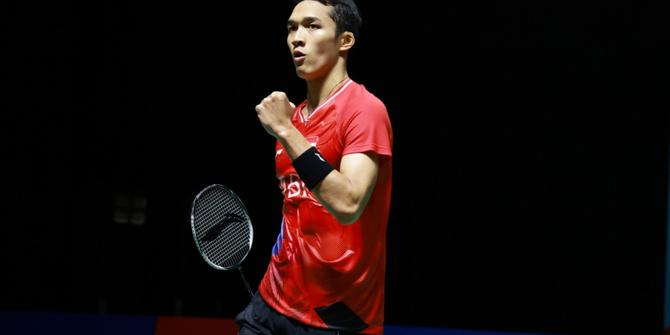
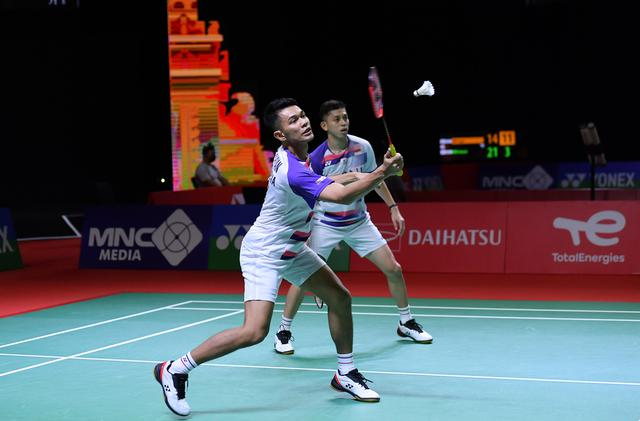

Hasil Swiss Open 2022: Juara, Jonatan Christie Akhiri Paceklik Gelar 3 Tahun
27 March 2022, 18:59 WIB

Tunggal putra Indonesia Jonatan Christie menjuarai Swiss Open 2022 usai tampil sempurna di final. Dia menaklukkan andalan India Prannoy HS 21-12, 21-18 di St Jakobshalle, Minggu (27/3/2022).
Tunggal putra Indonesia Jonatan Christie menjuarai Swiss Open 2022 usai tampil sempurna di final. Dia menaklukkan andalan India Prannoy HS 21-12, 21-18 di St Jakobshalle, Minggu (27/3/2022).
Advertisement
Jojo, yang harus melakoni rubber pada 16 besar, perdelapan final, dan semifinal, membutuhkan 48 menit untuk berjaya.
Ini adalah gelar ketiga sepanjang kariernya. Jonatan sebelumnya memenangkan New Zealand Open dan Australian Open, keduanya pada 2019.
Titel Swiss Open bagi Jojo didapat usai tampil baik sepanjang laga. Dia langsung tancap gas dan memimpin 4-1, tapi kemudian balik tertinggal 5-7 di gim pembuka.
Namun, juara Asian Games 2018 tersebut bisa bangkit. Perlahan dia menabung poin untuk unggul 12-8 dan 20-10. Meski sempat gagal beberapa kali mengamankan game point, Jojo akhirnya memenangkan gim pembuka dalam 19 menit.
Duel sengit hadir sejak awal gim kedua. Jojo memimpin 11-7 pada interval. Meski Prannoy mampu menyamakan 13-13, Jonatan kembali melesat dengan merebut tiga poin beruntun.
Jojo lalu menggunakan keunggulan tersebut untuk menguasai sisa laga dan menjuarai Swiss Terbuka.
Gelar Lain

Indonesia berkesempatan menambah gelar dari Swiss Open. Ganda putra Fajar Alfian/Muhammad Rian Ardianto bakal meladeni duo Malaysia Goh Sze Fei/Nur Izzuddin pada laga puncak.
Sebelumnya Fajar/Rian sukses menyingkirkan pasangan Negeri Jiran lain yakni unggulan dua Aaron Chia/Soh Wooi Yik.